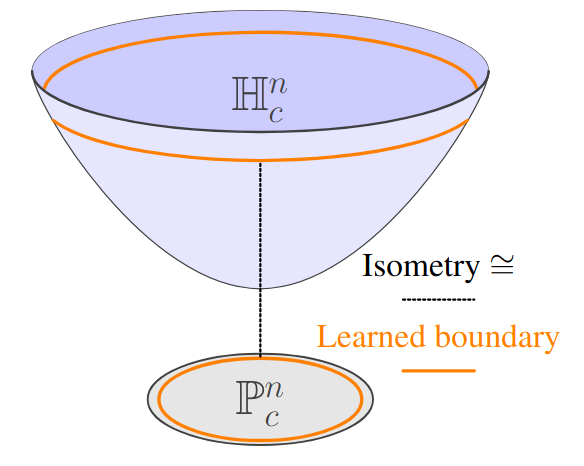
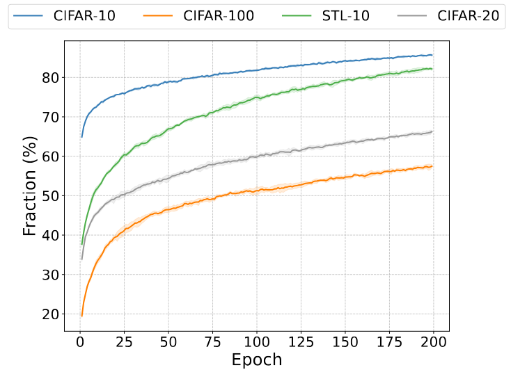
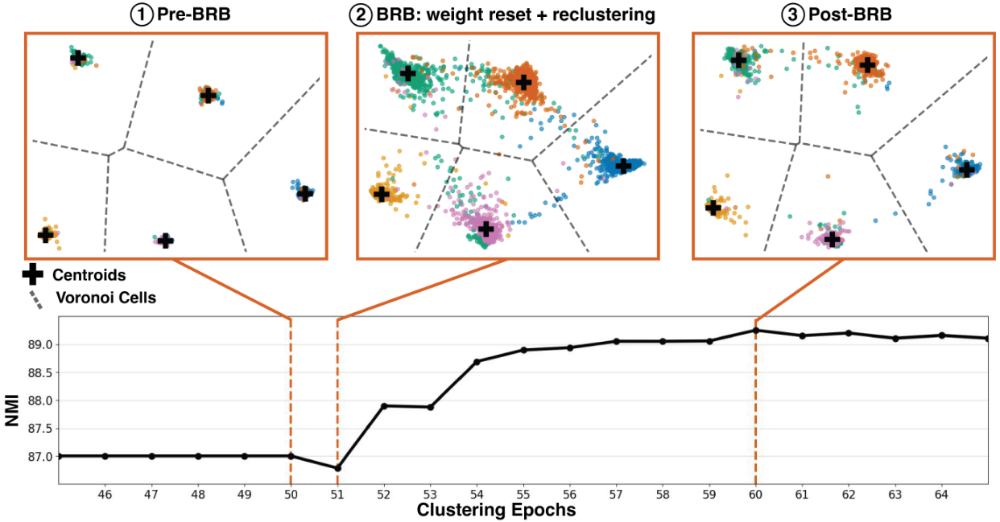
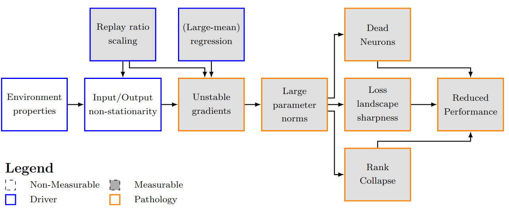
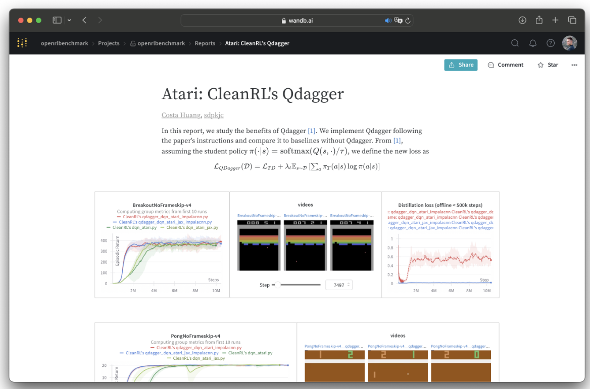
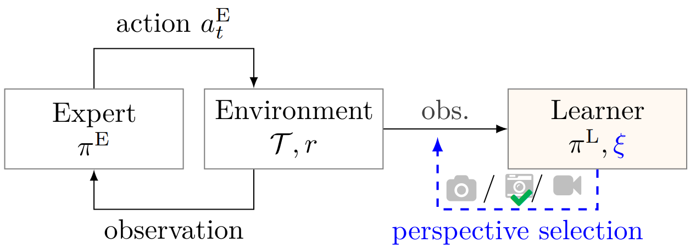
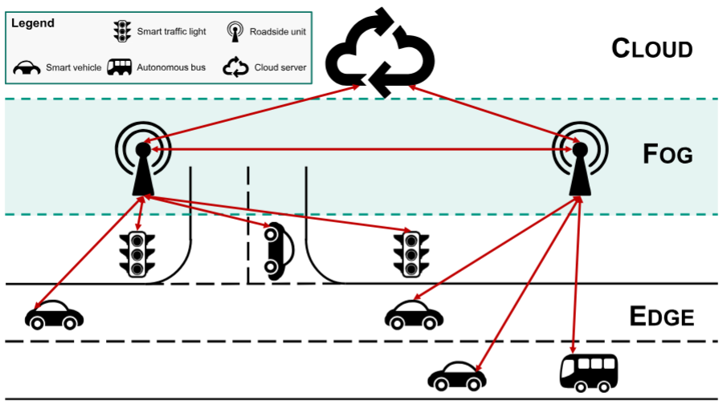
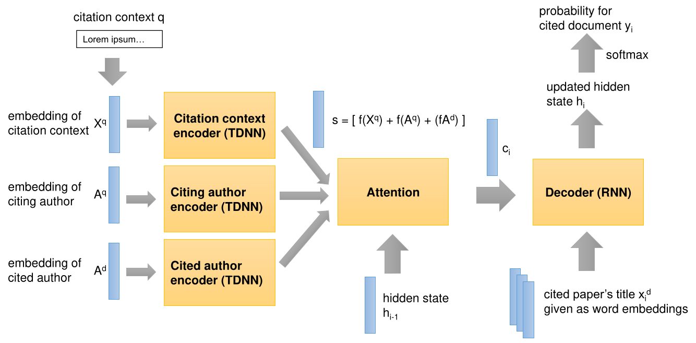

|
Research Interests
I study how different architectural and geometric priors influence the training dynamics, sample efficiency, and generalization of learning algorithms. My current research focuses on non-Euclidean (hyperbolic) representations for deep reinforcement learning. I am convinced that hyperbolic geometry provides a useful inductive bias for deep RL agents, particularly in hierarchical and compositional tasks.
Research Philosophy
I do hypothesis-driven empirical research in deep RL. Traditional theoretical analysis — using tabular settings or linear function approximation — cannot explain the behaviors that emerge when deep networks are combined with RL algorithms. Therefore, I develop understanding through precisely designed experiments and rigorous empirical evaluation that maintain direct connection to algorithms used in practice.
Selected Publications
|
|

|
Understanding and Improving Hyperbolic Deep Reinforcement Learning
Timo Klein*, Thomas Lang*, Andrii Shkabrii, Alexander Sturm, Kevin Sidak, Lukas Miklautz, Claudia Plant, Sebastian Tschiatschek
Under submission, 2025
paper
/
code
/
bibtex
@article{klein2025hyperbolic,
title={Understanding and Improving Hyperbolic Deep Reinforcement Learning},
author={Klein, Timo and Lang, Thomas and Shkabrii, Andrii and Sturm, Alexander and Sidak, Kevin and Miklautz, Lukas and Plant, Claudia and Tschiatschek, Sebastian},
year={2025},
note={Under submission}
}
We identify optimization instabilities in hyperbolic deep RL caused by large-norm embeddings. Our HYPER++ agent outperforms existing works through principled regularization, improved hyperbolic layers, and a geometrically-aligned value loss.
|
|

|
ReSL: Enhancing Deep Clustering Through Reset-based Self-Labeling
Andrii Shkabrii, Timo Klein, Lukas Miklautz, Sebastian Tschiatschek, Claudia Plant
ICLR Workshop on Scaling Self-Improving Foundation Models without Human Supervision, 2025
paper
/
bibtex
@inproceedings{shkabrii2025resl,
title={ReSL: Enhancing Deep Clustering Through Reset-based Self-Labeling},
author={Shkabrii, Andrii and Klein, Timo and Miklautz, Lukas and Tschiatschek, Sebastian and Plant, Claudia},
booktitle={SSI-FM@ICLR},
year={2025}
}
ReSL improves deep clustering by applying weight resets during self-labeling to prevent overconfidence and bias amplification on pseudo-labels.
|
|

|
Breaking the Reclustering Barrier in Centroid-based Deep Clustering
Lukas Miklautz*, Timo Klein*, Kevin Sidak*, Collin Leiber, Thomas Lang, Andrii Shkabrii, Sebastian Tschiatschek, Claudia Plant
International Conference on Learning Representations
(ICLR), 2025
paper
/
code
/
bibtex
@inproceedings{miklautz2025breaking,
title={Breaking the Reclustering Barrier in Centroid-based Deep Clustering},
author={Miklautz, Lukas and Klein, Timo and Sidak, Kevin and Leiber, Collin and Lang, Thomas and Shkabrii, Andrii and Tschiatschek, Sebastian and Plant, Claudia},
booktitle={ICLR},
year={2025}
}
This paper identifies the "reclustering barrier" phenomenon where centroid-based deep clustering algorithms plateau after early gains. We then propose BRB, an algorithm which avoids early over-commitment through careful re-initialization, breaking the reclustering barrier.
|
|

|
Plasticity Loss in Deep Reinforcement Learning: A Survey
Timo Klein, Christoph Luther, Manus McAuliffe, Lukas Miklautz, Claudia Plant, Sebastian Tschiatschek
Under submission, 2024
paper
/
bibtex
@article{klein2024plasticity,
title={Plasticity Loss in Deep Reinforcement Learning: A Survey},
author={Klein, Timo and Luther, Christoph and McAuliffe, Manus and Miklautz, Lukas and Plant, Claudia and Tschiatschek, Sebastian},
journal={arXiv preprint arXiv:2411.04832},
year={2024}
}
This survey provides the first systematic taxonomy of plasticity loss in deep RL by categorizing drivers, pathologies, and mitigation strategies.
|
|

|
Open RL Benchmark: Comprehensive Tracked Experiments for RL
Shengyi Huang*, Quentin Gallouédec*, Timo Klein, and others
arXiv preprint, 2024
paper
/
bibtex
@article{huang2024openrl,
title={Open RL Benchmark: Comprehensive Tracked Experiments for RL},
author={Huang, Shengyi and Gallouédec, Quentin and Felten, Florian and Raffin, Antonin and Dossa, Rousslan Fernand Julien and Zhao, Yanxiao and Sullivan, Ryan and Makoviychuk, Viktor and Makoviichuk, Denys and Danesh, Mohamad H. and Roumégous, Cyril and Weng, Jiayi and Chen, Chufan and Rahman, Md Masudur and Araújo, João G. M. and Quan, Guorui and Tan, Daniel and Klein, Timo and Charakorn, Rujikorn and Towers, Mark and Berthelot, Yann and Mehta, Kinal and Chakraborty, Dipam and KG, Arjun and Charraut, Valentin and Ye, Chang and Liu, Zichen and Alegre, Lucas N. and Nikulin, Alexander and Hu, Xiao and Liu, Tianlin and Choi, Jongwook and Yi, Brent},
journal={arXiv preprint arXiv:2402.03046},
year={2024}
}
Open RL Benchmark is a community-driven repository of over 25,000 fully tracked and reproducible RL experiments with complete raw data, enabling researchers to analyze learning curves and metrics without reproducing experiments from scratch.
|
|

|
Active Third-Person Imitation Learning
Timo Klein*, Susanna Weinberger*, Adish Singla, Sebastian Tschiatschek
arXiv preprint, 2023
paper
/
bibtex
@article{klein2023active,
title={Active Third-Person Imitation Learning},
author={Klein, Timo and Weinberger, Susanna and Singla, Adish and Tschiatschek, Sebastian},
journal={arXiv preprint arXiv:2312.16365},
year={2023}
}
We formalize active third-person imitation learning where an agent must select and combine limited-information perspectives to effectively learn from expert demonstrations.
|
|

|
A Threat Model for Vehicular Fog Computing
Timo Klein*, Tanja Fenn*, Anett Katzenbach*, Heiner Teigeler, Sebastian Lins, Ali Sunyaev
IEEE Access, 2022
paper
/
bibtex
@article{klein2022threat,
title={A Threat Model for Vehicular Fog Computing},
author={Klein, Timo and Fenn, Tanja and Katzenbach, Anett and Teigeler, Heiner and Lins, Sebastian and Sunyaev, Ali},
journal={IEEE Access},
year={2022}
}
This work presents a comprehensive threat model for Vehicular Fog Computing with 33 attacks and mitigation strategies, synthesized from literature review and expert interviews, emphasizing the importance of physical attacks in cyber-physical VFC systems.
|
|

|
Neural Citation Recommendation: A Reproducibility Study
Michael Färber, Timo Klein, Joan Sigloch
Bir@ECIR, 2020
paper
/
code
/
bibtex
@inproceedings{farber2020neural,
title={Neural Citation Recommendation: A Reproducibility Study},
author={Färber, Michael and Klein, Timo and Sigloch, Joan},
booktitle={Bir@ECIR},
year={2020}
}
This work re-implements and evaluates Neural Citation Network for context-aware citation recommendation, analyzing hyperparameter sensitivity and model performance.
|
|
Teaching
At the University of Vienna:
-
Introduction to Machine Learning (Head Teaching Assistant): WS23, WS24, WS25
Graduate-level course covering foundational ML methods: Linear Regression, Classification, Kernels, Neural Networks, Model Selection, Probabilistic Modeling
-
Mining Massive Data (Head Teaching Assistant): SS23, SS24, SS25
Graduate-level course on learning from large datasets: Online Learning, Clustering, Active Learning, Bandits, Reinforcement Learning
-
Foundations of Intelligent Systems (Teaching Assistant): WS23, WS24, WS25
Undergraduate course on machine learning fundamentals: Logic, Search, Markov Decision Processes, Utility Theory
|
CV
|
Experience
|
|
|
2021 - present
|
PhD Student, University of Vienna
Probabilistic and Interactive Machine Learning Group
|
Jan - Oct 2020,
Jul - Oct 2021
|
Research Assistant, Karlsruhe Institute of Technology
ROS-based decision-making system for autonomous driving using Monte Carlo Tree Search
|
|
Nov 2018 - Dec 2019
|
Research Assistant, FZI Research Center for Information Technology
Information extraction from heterogeneous documents using word2vec-based methods
|
|
Education
|
|
|
Oct 2017 - Nov 2021
|
M.Sc. Economics Engineering
Karlsruhe Institute of Technology
|
|
Sep 2007 - Jan 2012
|
B.S. Economics
University of Mannheim
|
|
My website is based on Jon Barron's
website. The icon is from Yuluck on Flaticon.
|
|
{kind=link}